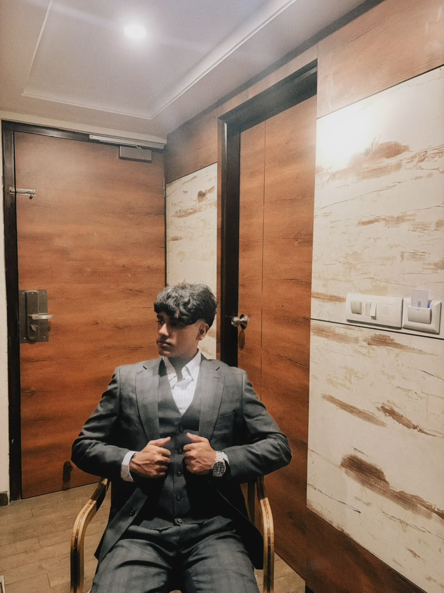

Programming
Programming fundamentals, lab programs, and project-based practice.
B.TECH · ARTIFICIAL INTELLIGENCE & DATA SCIENCE
Building with Code,
Thinking with Data,
Growing with AI.
An AI & Data Science undergraduate exploring software development, analytical problem-solving, and the ideas that turn into useful projects.

01 / THE PERSON BEHIND THE CODE
I'm a B.Tech student in Artificial Intelligence and Data Science at Rajagiri School of Engineering & Technology (RSET), Kochi, an autonomous engineering institution ranked 1st among private engineering colleges in Kerala and 3rd in all engineering categories in Kerala, as per KIRF 2025.
I'm passionate about programming, analytical problem-solving, and software development. Through hands-on academic projects, I've explored C programming and data analysis using R while strengthening my foundations in Python, SQL, and Data Structures & Algorithms.
I believe in learning by building, approaching challenges with curiosity, and continuously improving my technical skills. My goal is to apply what I learn to real-world problems, collaborate with others, and grow into a skilled software engineer.
Explore RSET's official profile ↗02 / MY TOOLKIT
A practical toolkit built through coursework, lab exercises, and academic projects.
Programming fundamentals, lab programs, and project-based practice.
Data handling, exploratory analysis, visualization, and introductory image processing.
Basic repository workflows, command-line use, and development environments.
Building strong fundamentals while learning to break problems into manageable steps.
Skills reflect current coursework and practice; proficiency grows with every project.
03 / SELECTED WORK
Academic projects that helped me put programming and analytical concepts into practice.
01 #include <stdio.h>
02 int main() {
03 display_menu();
04 calculate_bill();
05 return 0;
06 }
A console-based ordering program that lets users browse a menu, select multiple items and quantities, calculate totals, and generate a bill.
Exploratory analysis of a self-created dataset representing 50 customers and seven attributes, examining purchase amounts, product categories, ratings, and delivery times.
More to come. I'll add repository links here when the projects are published on GitHub.
04 / LEARNING OUTSIDE THE CLASSROOM
Courses, workshops, competitions, and technical events that have added to my learning journey.
FutureSkills Prime / NASSCOM
ENCIDE MACE · Takshak ’25
TATHVA ’25 · NIT Calicut
Ad Astra · Essay Writing Competition
CSI SB RSET · Online technical quiz
ABHIYANTHRIKI 2025 · RSET
IEEE RSET WIE Affinity Group
Certificate links are prepared as local files. Add the corresponding files to the certificates folder using the filenames shown in the setup guide.
05 / LET'S CONNECT
I'm interested in learning, collaborating, and exploring software development opportunities. Feel free to reach out.
Start a conversation ↗